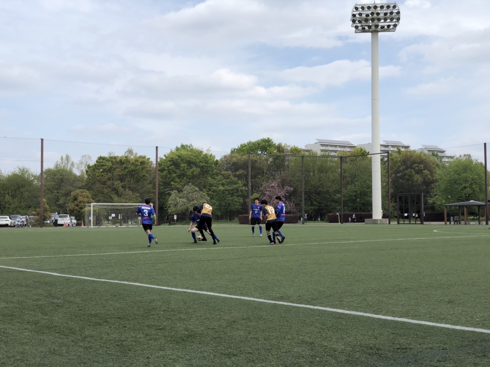
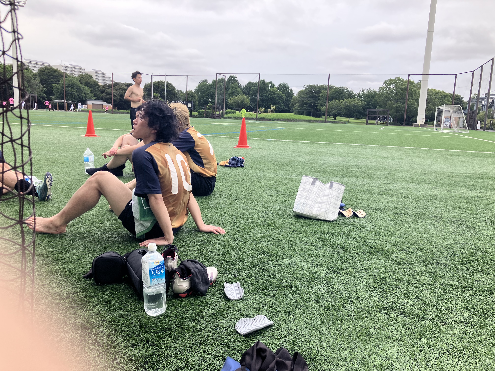

Join FC ZIEL
おかげさまで一般メンバー募集は一時休止中。
今はGK（ゴールキーパー）のみ募集しています。
WANTED
GOALKEEPER
おかげさまで一般メンバーの人数は充足しました。フィールドプレイヤーの募集は一時休止し、GKを探しています。
報酬：最高のチームメイトと、勝利の瞬間
※ GK以外のポジションは、おかげさまで部員数が充足したため現在募集を一時休止しております。今後再開する際はトップページでお知らせします。
Activity InfoGKに興味がある方、まずは見学だけでも大歓迎です。お気軽にどうぞ。
LINEでの連絡をご希望の場合は、メッセージ欄にLINE IDをご記入のうえ、ID検索の許可設定をお願いします。

